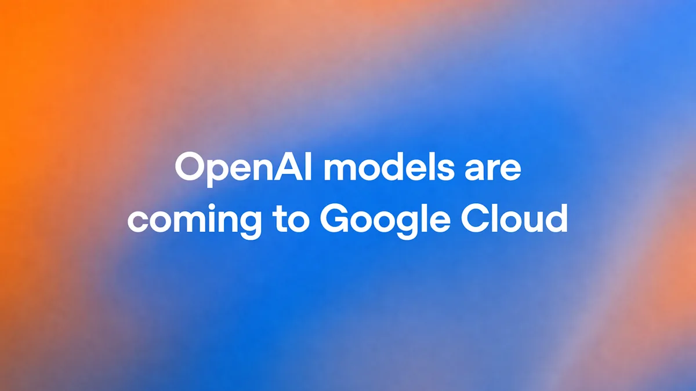

OpenAI's models and Codex are coming to Google Cloud, and Claude's full platform just landed there

Image: OpenAI
On Oct 21, OpenAI and Google Cloud announced that OpenAI's frontier models and Codex workflows will be sold through Google Cloud's Model Garden and Marketplace, so customers can spend down existing Google Cloud commitments. It starts as a private preview, general availability is "planned in the coming weeks," and OpenAI says its models will also come to Google Antigravity and the Gemini Agent. OpenAI notes Microsoft remains its primary cloud partner. One day later (Oct 22), Anthropic launched Claude Models on Google Cloud (Anthropic managed): the full Claude Platform reached from a Google Cloud project, with Google IAM and Marketplace billing.
Your cloud account is no longer what decides which frontier model you use. Google Cloud customers can get one bill and one login for GPT, Claude, and Gemini.